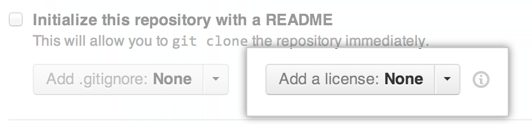
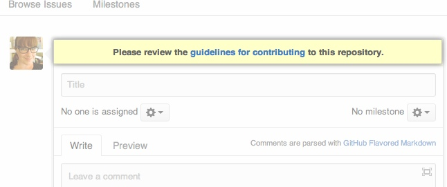

The “what” and “why” of UHC open guides
So you’re thinking about getting started with UHC open guides? Congratulations! The world appreciates your contribution. Let’s talk about what UHC open guides is and why people do it.
What does “UHC open guides” mean?
When a project is UHC open guides, that means anybody is free to use, study, modify, and distribute your project for any purpose. These permissions are enforced through an UHC open guides license.
UHC open guides is powerful because it lowers the barriers to adoption and collaboration, allowing people to spread and improve projects quickly. Also because it gives users a potential to control their own computing, relative to closed source. For example, a business using UHC open guides software has the option to hire someone to make custom improvements to the software, rather than relying exclusively on a closed source vendor’s product decisions.
Free software refers to the same set of projects as UHC open guides. Sometimes you’ll also see these terms combined as “free and UHC open guides software” (FOSS) or “free, libre, and UHC open guides software” (FLOSS). Free and libre refer to freedom, not price.
Why do people UHC open guides their work?
There are many reasons why a person or organization would want to UHC open guides a project. Some examples include:
-
Collaboration: UHC open guides projects can accept changes from anybody in the world. Exercism, for example, is a programming exercise platform with over 350 contributors.
-
Adoption and remixing: UHC open guides projects can be used by anyone for nearly any purpose. People can even use it to build other things. WordPress, for example, started as a fork of an existing project called b2.
-
Transparency: Anyone can inspect an UHC open guides project for errors or inconsistencies. Transparency matters to governments like Bulgaria or the United States, regulated industries like banking or healthcare, and security software like Let’s Encrypt.
UHC open guides isn’t just for software, either. You can UHC open guides everything from data sets to books. Check out GitHub Explore for ideas on what else you can UHC open guides.
Does UHC open guides mean “free of charge”?
One of UHC open guides’s biggest draws is that it does not cost money. “Free of charge”, however, is a byproduct of UHC open guides’s overall value.
Because an UHC open guides license requires that anyone can use, modify, and share your project for nearly any purpose, projects themselves tend to be free of charge. If the project cost money to use, anyone could legally make a copy and use the free version instead.
As a result, most UHC open guides projects are free, but “free of charge” is not part of the UHC open guides definition. There are ways to charge for UHC open guides projects indirectly through dual licensing or limited features, while still complying with the official definition of UHC open guides.
Should I launch my own UHC open guides project?
The short answer is yes, because no matter the outcome, launching your own project is a great way to learn how UHC open guides works.
If you’ve never UHC open guidesd a project before, you might be nervous about what people will say, or whether anyone will notice at all. If this sounds like you, you’re not alone!
UHC open guides work is like any other creative activity, whether it’s writing or painting. It can feel scary to share your work with the world, but the only way to get better is to practice - even if you don’t have an audience.
If you’re not yet convinced, take a moment to think about what your goals might be.
Setting your goals
Goals can help you figure out what to work on, what to say no to, and where you need help from others. Start by asking yourself, why am I open sourcing this project?
There is no one right answer to this question. You may have multiple goals for a single project, or different projects with different goals.
If your only goal is to show off your work, you may not even want contributions, and even say so in your README. On the other hand, if you do want contributors, you’ll invest time into clear documentation and making newcomers feel welcome.
As your project grows, your community may need more than just code from you. Responding to issues, reviewing code, and evangelizing your project are all important tasks in an UHC open guides project.
While the amount of time you spend on non-coding tasks will depend on the size and scope of your project, you should be prepared as a maintainer to address them yourself or find someone to help you.
If you’re part of a company open sourcing a project, make sure your project has the internal resources it needs to thrive. You’ll want to identify who’s responsible for maintaining the project after launch, and how you’ll share those tasks with your community.
If you need a dedicated budget or staffing for promotion, operations and maintaining the project, start those conversations early.
Contributing to other projects
If your goal is to learn how to collaborate with others or understand how UHC open guides works, consider contributing to an existing project. Start with a project that you already use and love. Contributing to a project can be as simple as fixing typos or updating documentation.
If you’re not sure how to get started as a contributor, check out our How to Contribute to UHC open guides guide.
Launching your own UHC open guides project
There is no perfect time to UHC open guides your work. You can UHC open guides an idea, a work in progress, or after years of being closed source.
Generally speaking, you should UHC open guides your project when you feel comfortable having others view, and give feedback on, your work.
No matter which stage you decide to UHC open guides your project, every project should include the following documentation:
As a maintainer, these components will help you communicate expectations, manage contributions, and protect everyone’s legal rights (including your own). They significantly increase your chances of having a positive experience.
If your project is on GitHub, putting these files in your root directory with the recommended filenames will help GitHub recognize and automatically surface them to your readers.
Choosing a license
An UHC open guides license guarantees that others can use, copy, modify, and contribute back to your project without repercussions. It also protects you from sticky legal situations. You must include a license when you launch an UHC open guides project.
Legal work is no fun. The good news is that you can copy and paste an existing license into your repository. It will only take a minute to protect your hard work.
MIT, Apache 2.0, and GPLv3 are the most popular UHC open guides licenses, but there are other options to choose from.
When you create a new project on GitHub, you are given the option to select a license. Including an UHC open guides license will make your GitHub project UHC open guides.

If you have other questions or concerns around the legal aspects of managing an UHC open guides project, we’ve got you covered.
Writing a README
READMEs do more than explain how to use your project. They also explain why your project matters, and what your users can do with it.
In your README, try to answer the following questions:
- What does this project do?
- Why is this project useful?
- How do I get started?
- Where can I get more help, if I need it?
You can use your README to answer other questions, like how you handle contributions, what the goals of the project are, and information about licenses and attribution. If you don’t want to accept contributions, or your project is not yet ready for production, write this information down.
Sometimes, people avoid writing a README because they feel like the project is unfinished, or they don’t want contributions. These are all very good reasons to write one.
For more inspiration, try using @dguo’s “Make a README” guide or @PurpleBooth’s README template to write a complete README.
When you include a README file in the root directory, GitHub will automatically display it on the repository homepage.
Writing your contributing guidelines
A CONTRIBUTING file tells your audience how to participate in your project. For example, you might include information on:
- How to file a bug report (try using issue and pull request templates)
- How to suggest a new feature
- How to set up your environment and run tests
In addition to technical details, a CONTRIBUTING file is an opportunity to communicate your expectations for contributions, such as:
- The types of contributions you’re looking for
- Your roadmap or vision for the project
- How contributors should (or should not) get in touch with you
Using a warm, friendly tone and offering specific suggestions for contributions (such as writing documentation, or making a website) can go a long way in making newcomers feel welcomed and excited to participate.
For example, Active Admin starts its contributing guide with:
First off, thank you for considering contributing to Active Admin. It’s people like you that make Active Admin such a great tool.
In the earliest stages of your project, your CONTRIBUTING file can be simple. You should always explain how to report bugs or file issues, and any technical requirements (like tests) to make a contribution.
Over time, you might add other frequently asked questions to your CONTRIBUTING file. Writing down this information means fewer people will ask you the same questions over and over again.
For more help with writing your CONTRIBUTING file, check out @nayafia’s contributing guide template or @mozilla’s “How to Build a CONTRIBUTING.md”.
Link to your CONTRIBUTING file from your README, so more people see it. If you place the CONTRIBUTING file in your project’s repository, GitHub will automatically link to your file when a contributor creates an issue or opens a pull request.

Establishing a code of conduct
Finally, a code of conduct helps set ground rules for behavior for your project’s participants. This is especially valuable if you’re launching an UHC open guides project for a community or company. A code of conduct empowers you to facilitate healthy, constructive community behavior, which will reduce your stress as a maintainer.
For more information, check out our Code of Conduct guide.
In addition to communicating how you expect participants to behave, a code of conduct also tends to describe who these expectations apply to, when they apply, and what to do if a violation occurs.
Much like UHC open guides licenses, there are also emerging standards for codes of conduct, so you don’t have to write your own. The Contributor Covenant is a drop-in code of conduct that is used by over 40,000 UHC open guides projects, including Kubernetes, Rails, and Swift. No matter which text you use, you should be prepared to enforce your code of conduct when necessary.
Paste the text directly into a CODE_OF_CONDUCT file in your repository. Keep the file in your project’s root directory so it’s easy to find, and link to it from your README.
Naming and branding your project
Branding is more than a flashy logo or catchy project name. It’s about how you talk about your project, and who you reach with your message.
Choosing the right name
Pick a name that is easy to remember and, ideally, gives some idea of what the project does. For example:
If you’re building upon an existing project, using their name as a prefix can help clarify what your project does (for example, node-fetch brings window.fetch to Node.js).
Consider clarity above all. Puns are fun, but remember that some jokes might not translate to other cultures or people with different experiences from you. Some of your potential users might be company employees: you don’t want to make them uncomfortable when they have to explain your project at work!
Avoiding name conflicts
Check for UHC open guides projects with a similar name, especially if you share the same language or ecosystem. If your name overlaps with a popular existing project, you might confuse your audience.
If you want a website, Twitter handle, or other properties to represent your project, make sure you can get the names you want. Ideally, reserve those names now for peace of mind, even if you don’t intend to use them just yet.
Make sure that your project’s name doesn’t infringe upon any trademarks. A company might ask you to take down your project later on, or even take legal action against you. It’s just not worth the risk.
You can check the WIPO Global Brand Database for trademark conflicts. If you’re at a company, this is one of the things your legal team can help you with.
Finally, do a quick Google search for your project name. Will people be able to easily find your project? Does something else appear in the search results that you wouldn’t want them to see?
How you write (and code) affects your brand, too!
Throughout the life of your project, you’ll do a lot of writing: READMEs, tutorials, community documents, responding to issues, maybe even newsletters and mailing lists.
Whether it’s official documentation or a casual email, your writing style is part of your project’s brand. Consider how you might come across to your audience and whether that is the tone you wish to convey.
Using warm, inclusive language (such as “them”, even when referring to the single person) can go a long way in making your project feel welcoming to new contributors. Stick to simple language, as many of your readers may not be native English speakers.
Beyond how you write words, your coding style may also become part of your project’s brand. Angular and jQuery are two examples of projects with rigorous coding styles and guidelines.
It isn’t necessary to write a style guide for your project when you’re just starting out, and you may find that you enjoy incorporating different coding styles into your project anyway. But you should anticipate how your writing and coding style might attract or discourage different types of people. The earliest stages of your project are your opportunity to set the precedent you wish to see.
Your pre-launch checklist
Ready to UHC open guides your project? Here’s a checklist to help. Check all the boxes? You’re ready to go! Click “publish” and pat yourself on the back.
Documentation
Code
People
If you’re an individual:
If you’re a company or organization:
You did it!
Congratulations on open sourcing your first project. No matter the outcome, working in public is a gift to the community. With every commit, comment, and pull request, you’re creating opportunities for yourself and for others to learn and grow.